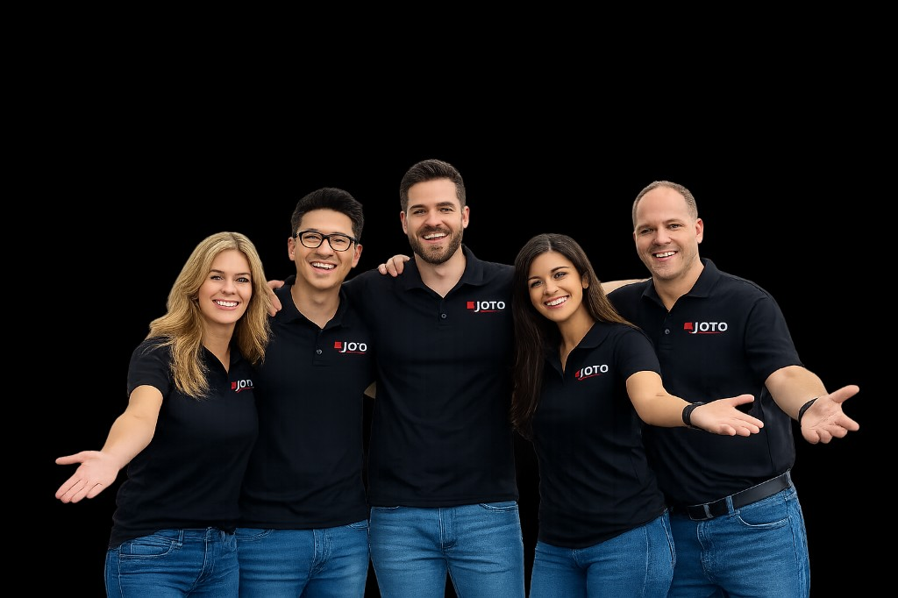

Core Products
Sublimation blanks, DTF/DTG supplies, transfer papers, heat-transfer vinyl, printers, inks, heat presses, mug presses, vinyl cutters, and engraving equipment.

Est. 1989 · Canada
Joto Imaging Supplies is a Canadian supplier of digital printing, garment decoration, and personalized-product equipment — serving everyone from first-time creators to established commercial decorators.

A full-spectrum supplier for the custom-decoration industry — equipment, consumables, and the expertise to help you grow.
Sublimation blanks, DTF/DTG supplies, transfer papers, heat-transfer vinyl, printers, inks, heat presses, mug presses, vinyl cutters, and engraving equipment.
Custom apparel businesses, promotional-product companies, print shops, creators, schools, and entrepreneurs producing personalized merchandise.
A broad ready-to-ship product selection, deep technical product knowledge, turnkey equipment packages, and supplies that help customers start or scale a printing business.
Joto is not simply an online craft-supply retailer. We position ourselves as a B2B growth partner for the custom-decoration industry — similar to a restaurant supplier that provides both the kitchen equipment and the ingredients required to operate.
We sell entry-level products such as mugs and vinyl, but also commercial systems costing thousands of dollars. Whether you're launching your first side hustle or upgrading a production floor, Joto has the breadth and depth to support your business.
Three decades of experience backed by inventory, logistics, and product knowledge you can rely on.
Purchase equipment, consumables, replacement materials, and blanks from a single trusted supplier — simplifying procurement and reducing vendor complexity.
Stocked warehouses across North America reduce lead times and support customers who repeatedly need supplies to keep production running.
More than three decades of experience helping customers select, configure, and upgrade the right equipment for their specific applications.
Five North American warehouses deliver two-day shipping to keep your production running.
A business model designed for long-term partnerships — equipment brings customers in, consumables keep them coming back.
From entry-level heat presses to commercial DTF systems worth thousands of dollars, equipment purchases are the foundation of every decorator's operation — and the starting point of every Joto relationship.
Inks, films, papers, powders, vinyl, and blanks generate repeat business over time. Stocked warehouses and fast shipping mean your supplies arrive when you need them, not weeks later.
Explore our product range, equipment packages, or reach out to our team for personalized guidance.